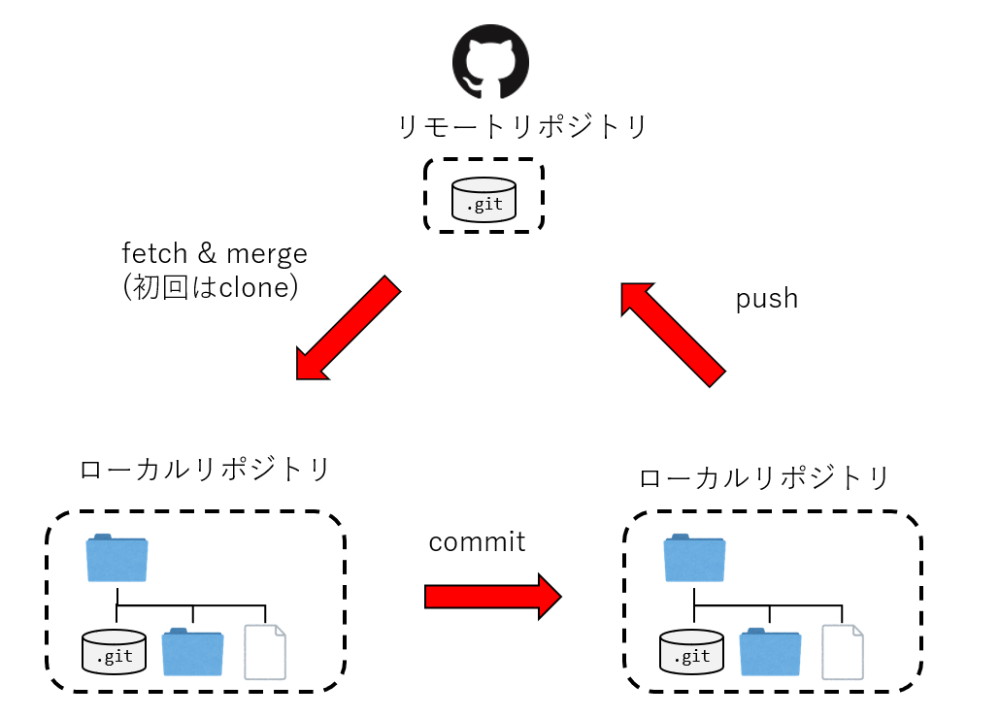
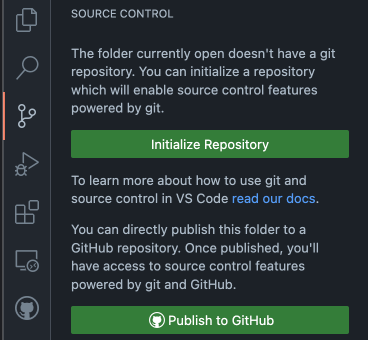
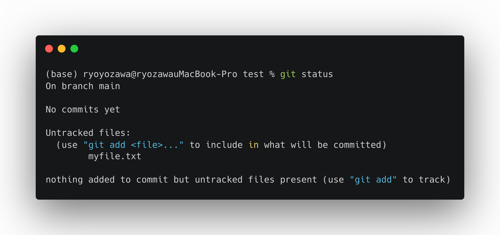
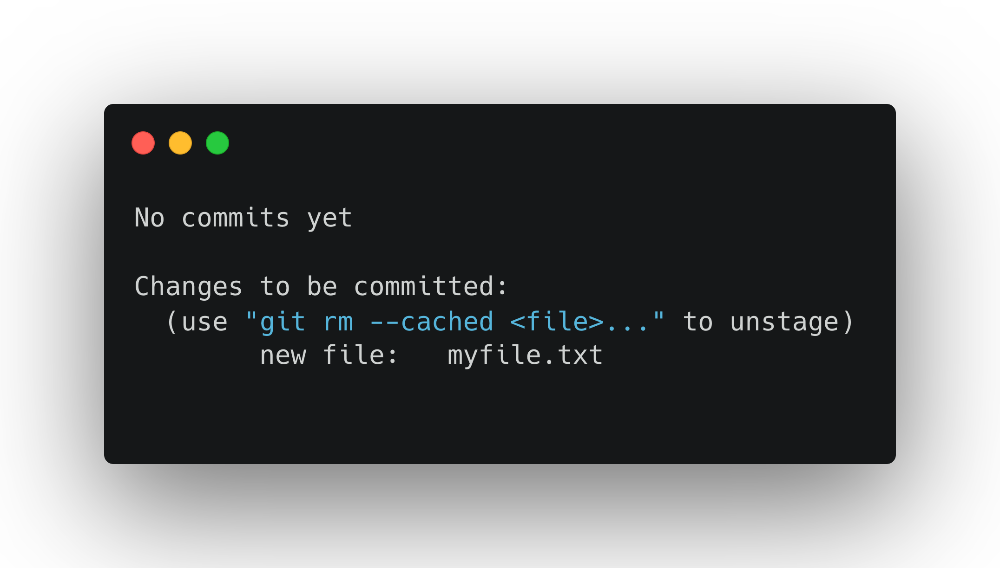
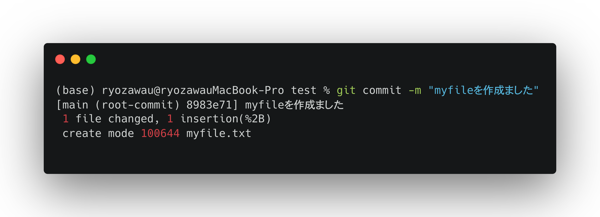
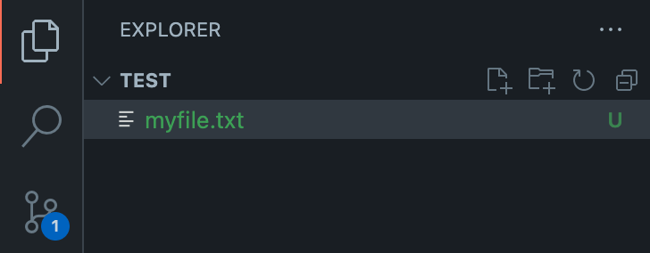
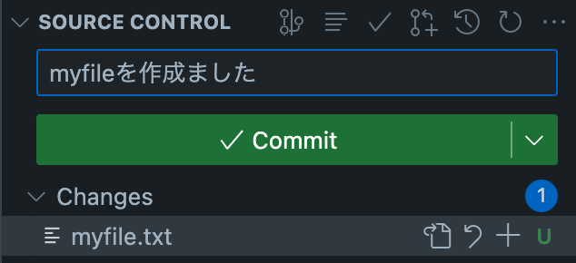
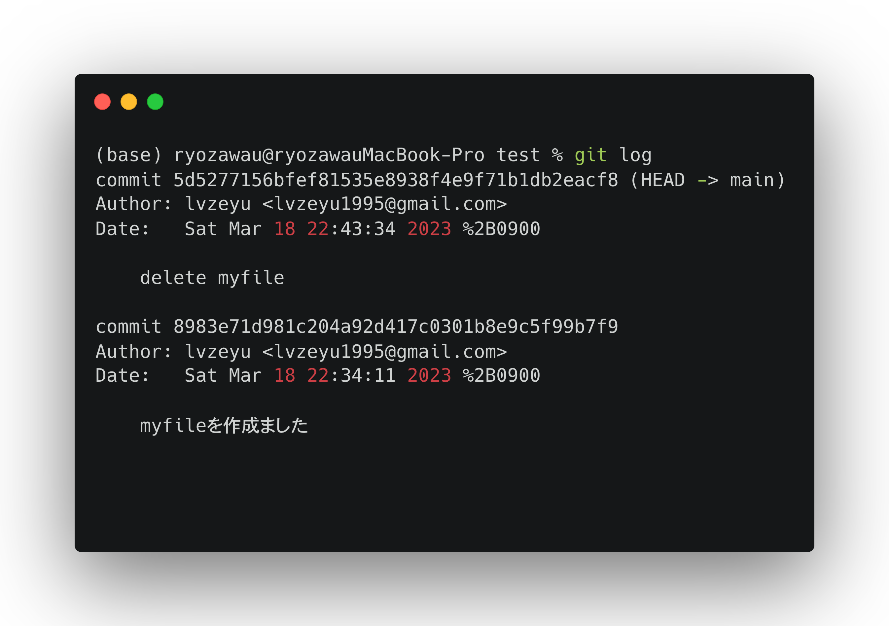
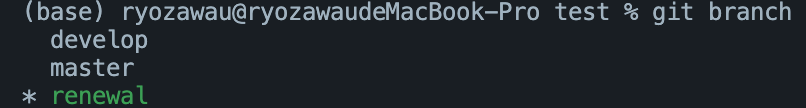

GitとGitHub#
紹介#
Gitは「パージョン管理システム(Version Control System)」と呼ばれるものの一つです。
パージョン管理システムは、バージョン管理とは、一つのファイルやファイルの集合に対して時間とともに加えられていく変更を記録するシステムで、後で特定バージョンを呼び出すことができるようにするためのものです。
ファイルの「パージョン(変更履歴)」を記録して、いつでも過去の状況に戻したり、過去の変更履歴を比較したり、どのタイミングで問題が起こっているかといった様々なことができるようになって、プログラム開発やファイル管理を補助するシステムです。
パージョン管理システムはたくさんの種類がありますが、現在最も利用されているのはGitです。さらに、GitHubなどのリモートリポジトリと組み合わせることで、クラウドでデータを管理したり、プロジェクトを共同開発するとき強力なツールとなります。

インストール#
Git#
GitHubの初期設定#
GitHubアカウントを作成します。
ターミナルを開きます。
次の git コマンドでユーザー情報を設定する。
git config --global user.name "First-name Family-name"
git config --global user.email "username@example.com"
次の git コマンドでSSHキーを生成する。
cd ~/.ssh
ssh-keygen -t rsa
任意のパスフレーズを入力してEnter（2回）。パスフレーズが不要であれば空欄のままEnterでよい。
SSH Keyを格納するディレクトリに移動します。
lsでファイルを確認します。id_rsa.pubというファイルがあるはずです。cat id_rsa.pubでSSHキーを開く、ssh-rsa XXXを全てコピーします。Githubのページの右上で、プロフィール画像をクリックし、続いてSettings→Access→SSH and GPG keys→ New SSH keyという順番でクリックしてください。
クリップボードの内容を
Keyフィールドに貼り付けます。Add SSH keyをクリックしてたら、SSHの登録が完了です。ターミナルで
ssh -T git@github.comを実行します。もしGitHubと連携できましたら、以下の内容が表示されます。
Hi USERNAME! You've successfully authenticated, but GitHub does not provide shell access.
VSCodeのインストール#
公式サイトからVSCodeをインストールする。
Note
VSCodeは強力なコードエディターであり、様々なプログラミング言語に機能を提供する幅広い拡張機能を備えた軽量の汎用統合開発環境 (IDE) です。VSCodeでより簡単的に・効率的にGitを操作できます。また、VSCodeでは便利な機能が豊富に搭載されているPython拡張機能もたくさんあります。
Gitの基本操作#
Git プロジェクトを取得するには、大きく二通りの方法があります。
既存のプロジェクトやディレクトリを Git にインポートする方法。
既存の Git リポジトリを別のサーバーからクローンする方法です。
まず、既存のプロジェクトやディレクトリを Git にインポートし、ファイルをコミットと履歴の管理を説明します。
既存のディレクトリでのリポジトリの初期化#
ディレクトリを作ろう
mkdir test cd test
リポジトリの初期化
git init
「ファイル」→「フォルダーを開く』→ ディレクトリを選択。VSCode左側の『エクスプローラー』に、開いたフォルダ名が表示されます。
サイドバーの「ソース管理」(Source Control)を表示して，「リポジトリの初期化」(Initialize Rspository)をクリックします。

コミット(commit)#
リポジトリを作成すると、そこに対するファイルの変更履歴を登録することができます。その操作をコミット(commit)といいます。
コミットを実行すると、リポジトリの内では、前回コミットした時の状態から現在の状態までの差分を記録したリビジョンと呼ばれるものが作成されます。

Gitの管理下に置かれた、みなさんが実際に作業をしているディレクトリのことをワークツリーと呼びます。
Gitではリポジトリとワークツリーの間にはインデックスというものが存在しています。インデックスとは、リポジトリにコミットする準備をするための場所のことです。
コミットでファイルの状態を記録するためには、まずインデックスにファイルを登録し、そして変更をコミットするプロセスになります。
ディレクトリで任意のファイルを作る。例えば、
echo This is some text > myfile.txt
git statusでステータスを確認すると、myfile.txtはUntracked fileであり、つまり、また追跡対象になっていないです。
git status

git add myfile.txtでmyfile.txtを追跡対象に追加し、再びgit statusでステータスを確認すると、Changes to be committed、すなわち、コミット待ちと表示されています。
git add myfile.txt git status

コミットをするには
git commitというコマンドを使います。コミットをする際、コミットの内容を説明するメッセージを記入する必要があります。-mというオプションを付加して、その後メッセージを入れましょう。例えば、
git commit -m "myfileを作成ました"

ファイルを作成すると、VSCodeが自動的に変更を検出し、ソース管理サイドバーで数字が表示されます。

ソース管理に更新ファイルの一覧が表示されます。
+アイコンでステージング操作を行います(git addと相当する)。ステージングした状態からコミットメッセージを入力して、
コミット(Commit)アイコンでコミットが完了します。

コミットリセット(reset)#
どんな作業であっても、何かをやり直したくなることはあります。 ここでは、行った変更を取り消すための基本的なツールについて説明します。
仮に、myfile.txtを削除し、コミットした操作を行いましたが、実はこのファイルは捨ててはいけないファイルだったと気ついたとします。
Gitで間違えた変更を元に戻していきましょう。
myfile.txtを削除し、delete myfileというコメントでコミットします。
git logでコミットの情報を確認します。コミットを特定するためには、5d5277156bfef81535e8938f4e9f71b1db2eacf8のような形のハッシュを使います。 オレンジ色の部分はコミットIDの情報になります。
git log

特定のコミットまで戻す場合、
git reset 1bce0dde07dbe83b786c745110983d62dff5fdecという形でコミットIDを指定できます。
Git Graphという拡張機能をインストールします。
サイドバーの「Source Control」→「View Commit Graph」をクリックすると、ログを確認できます。
戻すそうのコミットを見つけて、マウスの右クリックし、表示されるメニュで「
Reset Current Branch to Commit」→ 「Reset」を選ぶと、指定したコミットに戻ります。
Note
リセットはオプションを指定できます。
--soft「変更」→「ステージング」→「コミット」の作業のうち、最後の「コミット」だけをリセットする方法です。ファイルがステージングされた状態まで戻されます。--mixed「ステージング」までをリセットする方法です(default オプション)。インデックスが空の状態に戻すので、ここでステージングを一からやり直してコミットできます。--hard「変更」から全て破棄する方法です。この方法の場合、ファイルの変更などを含めて破棄されます。
Advanced
git checkoutでも元の状態に戻すことができます。ただ、この操作はワークツリーまで変更するので、場合によるcheckoutは作業ディレクトリを破壊する(上書きなど)可能性もありますので、十分に注意してください。一方、git resetは--hardオプションではないなら、作業ディレクトリにファイルに直接に変更は加えられていません。
ブランチ(branch)#
ブランチとは、開発の本流から分岐し、それぞれ状態ごとに作業を進める機能のことです。
ブランチ機能を使うことで、複数の状態を同時に保つことができます。個人作業での試行錯誤もグールプの共同作業も非常に役を立っています。

新しいブランチを作ってみましょう。例えば、
developという名前のブランチを作るなら、git branch developを実行します。特定のコミットからブランチを作る際、
git checkoutコマンドを使います。例えば、コミットID3be9fa7からrenewalという名前のブランチを作るなら、git checkout 1bce0dd -b renewalを実行します。 git branchで現在作られるブランチの一覧を確認できます。git checkoutで切り替えます。例えば、developに切り替えるなら、git checkout developを実行します。
画面の左下のブランチ名（master）が表示されている個所をクリックし、新しいブランチを作成を実行します。手順で作成するブランチ名を入力してブランチを作成します。
Git Graphを開けて、分岐を作成したいコミットで右クリックし、表示される表示されるメニュで
Create Branchを選ぶ、手順で作成するブランチ名を入力してブランチを作成します。
ブランチを分けて作業を進めると、各ブランチでの内容がバラバラになります。そんな時に、各ブランチでの変更をまとめる機能は「マージ」です。
仮に、develop branchでmyfile4.txtを追加する作業を行います。
git checkout develop
echo some text >> myfile4.txt
git add myfile4.txt
git commit -a -m "add myfile4.txt"
masterブランチに切り替えます。masterブランチでmyfile5.txtを作成し、コミットします。
ここで、developブランチをmasterブランチにマージします。
git branchで現在masterブランチにいることを確認します。git merge developでマージを実行します。
ステータスバーの左下端に表示されているブランチが「
master」になっていることを確認します。Ctrl+Shift+P（Command+Shift+P）でコマンドパレットを開く、入力欄にGit:mergeと入力するとマージの項目が表示されます。マージしたいブランチを選択します。これで、現在のブランチに選択したブランチがマージされます。
import panda as pd
GitHubの基本操作#
ここまで、Gitをローカル環境での利用方法をまなびました。Gitは分散型のバージョン管理システムで、同じプロジェクトに関するリポジトリをネットワーク上に複数置くこともできます。この性質を利用すると、色々なことができるようになります。
複数人で一つのプログラムを編集したり、修正作業を依頼したりすること
共同作業の進捗を管理すること
リモートリポジトリで作業をバックアップすること
Git機能を搭載したプロジェクト管理サービスは数多くありますが、本授業はその中でも一番使われているGithubを利用していきます。
リモートリポジトリの作成#
ページの右上隅で、[\(+\)]ドロップダウンメニューを使用して、 [新しいリポジトリ] を選択します。

リポジトリ名を入力します。必要に応じて、リポジトリの説明を追加します。
リポジトリの可視性を選択してください。パブリックリポジトリには、インターネット上の誰でもアクセスできます。プライベートリポジトリには、自分や招待した人のみがアクセスできます。
[Initialize this repository with a README] (このレポジトリを README で初期化する) を選択します。

[Create repository] (リポジトリの作成) をクリックします。